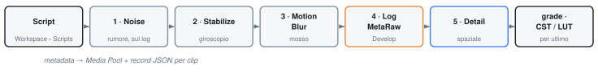

Log MetaRaw
Metadata di camera e sviluppo scene-referred per DaVinci Resolve 20 e 21 · guida illustrata · v@VERSION@
Le camere scrivono nel file come è stata girata l'inquadratura (Kelvin, tinta, EI, obiettivo, profilo log). Log MetaRaw li legge e li usa, in luce lineare, con curve e gamut pubblicati. Lo script e cinque nodi, in quest'ordine (il numero è anche sull'icona di ogni nodo):

| Funzione (etichetta nel programma) | Cosa fa | pag. |
|---|---|---|
| Script · Workspace › Scripts › Log MetaRaw | ||
| Origine | Tutto il Media Pool o le clip selezionate | 3 |
| 1 · Leggi metadata | Una riga per clip: camera, obiettivo, EI, WB, profilo, data level, stato | 3 |
| 2 · Scrivi in Resolve | Metadata, colonne, keyword, Camera Notes, data burn nel Media Pool | 3 |
| Esporta CSV | I campi che Resolve non ha (EI, tinta, fuoco…), da importare come metadata | 3 |
| Copia su clip senza metadata | Copia i valori delle clip lette sui ProRes di un registratore esterno | 3 |
| Opzioni | Tag per camera · Sovrascrivi metadata · Correggi il Data Level · Imposta anche Input Color Space | 3 |
| Nodo Log MetaRaw Noise · nodo 1, sull'immagine log · temporale e spaziale, GPU Metal 4.0 | ||
| Profilo · Campione | Rumore atteso per camera, ISO e formato (Automatico), corretto da una zona campione, o Manuale; Livello rumore | 9 |
| Temporale · Spaziale · Protezione | Fotogrammi ±1-3 allineati; Luminanza, Colore, bande, ombre; dettaglio e pelle | 9 |
| Vista · Salta Noise ovunque | Rumore rimosso, mappa, movimento; spegne tutti i nodi Noise per lavorare | 9 |
| Stabilize · Motion Blur · nodi 2 e 3 · Mecena Motion, solo Mac Apple silicon 4.0 | ||
| Stabilize › Stile · MASTER | Giroscopio della clip (Gyroflow): Micromosso, Controllato, Cinematografico, Crane | 9 |
| Motion Blur › Look · Shutter | Mosso ricostruito dal flusso ottico, es. 50p 90° → 25p 180°; la grana resta | 9 |
| Script › Acquisizione profonda | Giroscopio e obiettivo di ogni fotogramma nel MecenaClipDB | 9 |
| Nodo Log MetaRaw (Develop) · Color › OpenFX, primo nodo · puntuale, esportabile in LUT | ||
| Versione · Camera · Rileggi metadata | Controllo aggiornamenti; camera letta; riporta tutto ai valori di ripresa | 4 |
| Ripresa › Decodifica | Clip (controlli liberi) o Camera metadata (bloccati sui valori di ripresa) | 4 |
| Bilanciamento · Temperatura · Tint | As shot o preset; adattamento Bradford in luce lineare | 4 |
| Punto bianco | Contagocce: il punto scelto diventa neutro, Temperatura e Tint si impostano | 4 |
| Esposizione › EI | Il doppio dell'EI di ripresa = +1 stop, guadagno lineare prima di ogni curva | 4 |
| False color (×3) | Viste di esposizione (bande ARRI), temperatura e tinta (come CineMatch) | 5 |
| Spazio colore › Ingresso | Spazio colore, Gamma, Rilevato, Data level, Livello, Ripristina | 5 |
| Spazio colore › Senza metadata | Sblocca controlli: EI, Kelvin e Tint di ripresa scritti a mano (ProRes esterni) | 5 |
| Uscita › Tone mapping | Nessuno (CST), ACES 2.0, Luminanza, Filmico, ACES 1.3, OpenDRT | 7 |
| Compressione · Mappatura gamut | RGC ACES (riferimento o parametrica); compressione saturazione nel gamut | 7 |
| Vibrance luci | Ridà colore alle luci chiare e poco sature dopo il tone mapping | 7 |
| Uscita › Spazio colore · Gamma | Come un CST; anche di scena: DaVinci WG / Intermediate 3.2 | 7 |
| Dimensione LUT · Esporta LUT (.cube) | LUT 3D 17/33/65 punti con tutto il nodo | 5 |
| Toni | Highlights (spalla filmica), Bianco (stop), Soft Clip, Saturation | 6 |
| Mostra tutti i controlli | Contrast, Shadows, Whites, Blacks, Vibrance, Azzera toni | 6 |
| Zone | Black, Shadow, Light, Specular: Exp, Sat, Range, Falloff; Pivot; False color: zone | 6 |
| Dati di ripresa | Obiettivo, focale, diaframma, fuoco, shutter, ISO/EI, WB, fps, ND, LUT camera | 4 |
| Nodo Log MetaRaw Detail · subito dopo · spaziale, escluso da Generate LUT | ||
| Modalità · Fase | Zonale, Split grade, Unito; tre fasi, un nodo ciascuna o tutte in uno | 8 |
| Ingresso (IDT) · Destinazione (ODT) | Codifica che entra; dove cadono nero (zona 0) e bianco (zona X) | 8 |
| Misura | Ombra, Luce, Misura zone, Misura automatica, Ombra sulla zona, Luci sulla zona | 8 |
| Split grade · Provino | Luci morbide, Ombre dure, Grado, Unione; provino e Usa la cella | 8 |
| Gamma dinamica | Local Contrast, Local Highlights, Local Shadows, Brucia i bordi; viste | 8 |
| Presenza · Avanzate · Velo | Texture, Clarity, Dehaze; raggio, soglie, Bianco; livello e colore del velo | 8 |
| Guida | Per la fase scelta: scopo, tre passi, passo dopo | 8 |
Non è raw. Un MP4 log è già compresso, a 8 o 10 bit, con la riduzione rumore della camera:
in luce lineare si comporta in un modo che ricorda un RAW, ma ciò che la camera non ha registrato non torna. Esporre bene
resta la cosa più importante. I file originali non vengono mai modificati.